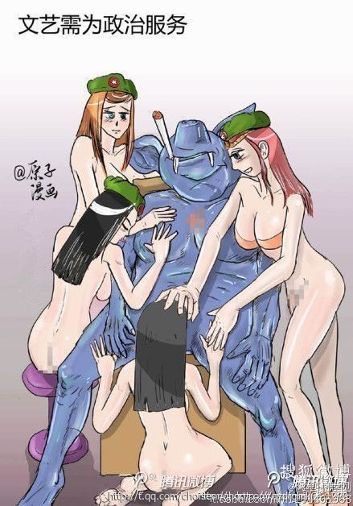
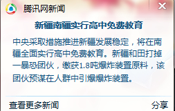

Conversation with 81184027 at Tue 27 May 2014 11:08:50 AM CST on 154115835 (webqq)
(11:09:20 AM) 2887910418: 相信
(11:00:17 AM) 蔚蓝的天空: 被抓的渔民看是否触犯他国法律
(11:00:32 AM) 蔚蓝的天空: 触犯了 就要受到人家制裁
(11:00:44 AM) 福建-福州&水浒: :face57::face57::face57:
(11:00:48 AM) 蔚蓝的天空: 我天朝是礼仪之邦
(11:01:07 AM) 福建-福州&水浒: :face73::face73::face73::face57::face57::face57:
(11:01:11 AM) 2887910418: 毛线，自己的海上还怎么了
(11:01:34 AM) 蔚蓝的天空: 你放心本届政府一定会和小菲礼尚往来:face13:
(11:02:02 AM) 福建-福州&水浒: 还是撒逼
(11:02:04 AM) 福建-福州&水浒: :face57::face57::face57:
(11:02:12 AM) 蔚蓝的天空: 你说是自己的海 他说是他的海 为什么非要到争议区捕鱼呢
(11:03:29 AM) 2887910418: 争议毛
(11:03:40 AM) 福建-福州&水浒: 呵呵:blush:再一次撒逼
(11:03:47 AM) 蔚蓝的天空: 请相信本届政府
(11:03:59 AM) 福建-福州&水浒: 最后一次撒逼，
(11:04:06 AM) 醒悟: 拿出城管精神
(11:04:08 AM) 福建-福州&水浒: 完毕，
(11:05:01 AM) 蔚蓝的天空: 要相信 不战而屈人之兵 要相信兵不血刃 要相信本届政府:face13:
(11:06:38 AM) 蔚蓝的天空: 要再中华人民共和国成立100年时全面建成小康社会
(11:07:12 AM) 蔚蓝的天空: 坚信两个一百年
(11:07:21 AM) 蔚蓝的天空: :face13:
(11:09:20 AM) 2887910418: 相信
(11:09:20 AM) 潮哥: 相信
(11:00:17 AM) 蔚蓝的天空: 被抓的渔民看是否触犯他国法律
(11:00:32 AM) 蔚蓝的天空: 触犯了 就要受到人家制裁
(11:00:44 AM) 福建-福州&水浒: :face57::face57::face57:
(11:00:48 AM) 蔚蓝的天空: 我天朝是礼仪之邦
(11:01:07 AM) 福建-福州&水浒: :face73::face73::face73::face57::face57::face57:
(11:01:11 AM) 潮哥: 毛线，自己的海上还怎么了
(11:01:34 AM) 蔚蓝的天空: 你放心本届政府一定会和小菲礼尚往来:face13:
(11:02:02 AM) 福建-福州&水浒: 还是撒逼
(11:02:04 AM) 福建-福州&水浒: :face57::face57::face57:
(11:02:12 AM) 蔚蓝的天空: 你说是自己的海 他说是他的海 为什么非要到争议区捕鱼呢
(11:03:29 AM) 潮哥: 争议毛
(11:03:40 AM) 福建-福州&水浒: 呵呵:blush:再一次撒逼
(11:03:47 AM) 蔚蓝的天空: 请相信本届政府
(11:03:59 AM) 福建-福州&水浒: 最后一次撒逼，
(11:04:06 AM) 醒悟: 拿出城管精神
(11:04:08 AM) 福建-福州&水浒: 完毕，
(11:05:01 AM) 蔚蓝的天空: 要相信 不战而屈人之兵 要相信兵不血刃 要相信本届政府:face13:
(11:06:38 AM) 蔚蓝的天空: 要再中华人民共和国成立100年时全面建成小康社会
(11:07:12 AM) 蔚蓝的天空: 坚信两个一百年
(11:07:21 AM) 蔚蓝的天空: :face13:
(11:09:20 AM) 潮哥: 相信
(11:09:25 AM) 蔚蓝的天空: 让我们紧密团结在以习近平为总书记的党中央周围 为实现中华民族的伟大复兴而努力奋斗
(11:09:37 AM) 蔚蓝的天空: :face13:
(11:10:06 AM) 光: 2013年12月6日，蘋果日報稱：“周永康成為中共反腐刀下「大老虎」，12月1日晚，周被中共正式軟禁扣查，罪名包括：企圖刺殺習近平、圖謀政變、殺妻害命及巨額貪腐。”[32]蘋果日報提到，1999年周永康看上比他小28歲的中央電視台女主播賈曉燁，為娶賈，周指使製造車禍將前妻撞死；周與賈於2001年結婚。[32]
(11:10:40 AM) 潮哥: 团结在彭丽媛身旁
(11:10:44 AM) 潮哥: :p
(11:11:19 AM) 醒悟: 习大大，如果能改体制还有希望，不然无望
(11:10:49 AM) 光: 20世纪90年代末，在CCTV2任职的贾晓烨经常同摄影师一起采访周永康，双方结下关系。周永康的原配王淑华死后，贾晓烨与比自己大28岁的周永康结婚。[2] 有媒体称，贾晓烨与周永康结婚后跟着调任中共四川省委书记的周永康在四川工作，周永康进入中共中央政治局到北京工作后，贾晓烨被安排到CCTV任编导，因其相貌平平，异常低调差点在CCTV裁员时被裁掉，而周永康的一个电话，CCTV的高层才知道贾晓烨的来路。[1]
(11:11:36 AM) 蔚蓝的天空: 操哥 你没有素质枉为人
(11:11:43 AM) 潮哥: 改个毛
(11:11:21 AM) 光: 家庭 丈夫：周永康，前中共中央政治局常委、中央政法委书记。 胞妹：贾晓霞，被薄启亮提拔为中石油加拿大公司副总，还曾担任加拿大中国商会执行理事等职务，是加拿大卡尔加里华人社区活跃人物[3]。
(11:11:40 AM) 光: 违法行为 薄启亮与周永康关系密切，曾违规提拔周永康妻子贾晓烨的妹妹贾晓霞为中石油加拿大公司副总，级别为副局级。[1] 薄启亮负责海外业务收购期间造成严重国有资产流失。2010年至2012年，中石油收购的澳大利亚和加拿大项目全是国外投行包装出来的公司，估值虚增十倍甚至百倍，薄启亮等人从中大举牟利，以中国石油的水平完全可以察觉，但薄启亮与某些高干子弟勾结，试图从中获取利益。[1] 薄启亮还涉及严重的裙带关系，薄启亮长期负责中石油海外项目，薄启亮的哥哥通过代理人开设公司，专门负责中国石油海外业务材料采购。中国石油80多 个海外项目中，80%都是由该公司的材料，这些由薄启亮哥哥控制的公司负责材料采购，每年收入在200亿左右。薄启亮还让他的同学承接中国石油海外业务的 后勤管理项目。每年各项目后勤管理费用达上百亿，他同学的公司从中赚取高额利润，收益从中按照三七开，薄启亮收取七成利益。[1]
(11:12:25 AM) lost message from #118511 to #118511
(11:12:59 AM) 蔚蓝的天空: 周永康的问题是政治问题
(11:13:20 AM) 蔚蓝的天空: 是立场问题 是站错队的问题
(11:12:47 AM) 光: 要知道一个人是做不了这么多事情的
(11:13:28 AM) 醒悟: 彭丽媛到底是不是小三起家
(11:12:56 AM) 光: 背后一定有一个庞大的组织
(11:13:34 AM) 蔚蓝的天空: 是不听招呼的问题
(11:15:36 AM) 蔚蓝的天空: 这个组织正在清理
(11:15:37 AM) 醒悟: 彭丽媛听说与赖常兴有关系
(11:15:42 AM) 蔚蓝的天空: 刘汉只是开始
(11:15:59 AM) 山东-青岛&昆吾: @醒悟 开门，查水表！
(11:15:27 AM) 光: 这个利益关系网有多大
(11:16:09 AM) 蔚蓝的天空: 先把老虎的爪牙给打掉
(11:15:36 AM) 光: 很难想象
(11:16:47 AM) 醒悟: 红楼赖常兴
(11:16:14 AM) 光: 要知道中国的很多部门都是喊着没有钱
(11:16:21 AM) 光: 钱到哪里去了
(11:17:35 AM) 醒悟: 口袋里
(11:17:49 AM) 蔚蓝的天空: 大家心知就行了
(11:17:52 AM) 醒悟: 女人洞洞里:D
(11:18:18 AM) 山东-青岛&昆吾: 啥洞？
(11:18:22 AM) 山东-青岛&昆吾: 防空洞？
(11:18:35 AM) 醒悟: 无底洞
(11:22:31 AM) 蔚蓝的天空: 
(11:23:52 AM) 光: 所以这样的人最怕没有权力
(11:24:03 AM) 光: 没有权力这样的人毫无价值
(11:29:33 AM) 光: 我相信如果周不被打到，很多人还是支持他的，因为他手上有权力
(11:29:48 AM) 光: 这就是问题所在
(11:30:15 AM) 光: 到底是在崇拜权力，还是在追求真理
(11:31:06 AM) lost message from #118540 to #118540
(11:31:24 AM) 蔚蓝的天空: 他倒台 是因为兵变失败
(11:31:28 AM) 光: 是啊
(11:32:07 AM) 蔚蓝的天空: 他支持的是薄 站错队了
(11:31:36 AM) 光: 还有没露头的
(11:32:32 AM) 蔚蓝的天空: 下一个目标 李氏家族
(11:32:44 AM) 光: 为什么我们国家这么盛产巨贪
(11:33:22 AM) 蔚蓝的天空: 江氏暂时动不了
(11:32:55 AM) 光: 这才是值得反省的重点
(11:33:43 AM) 蔚蓝的天空: 改变不了
(11:33:56 AM) 蔚蓝的天空: 这是规律
(11:34:14 AM) 蔚蓝的天空: 不是我们国家贪 别过也是这样
(11:34:14 AM) 光: 与这些巨贪比
(11:34:19 AM) 光: 邪教算什么
(11:35:27 AM) 上善若水: 不是我们鸡蛋不好吃，别人家鸡蛋也不好吃
(11:35:35 AM) 上善若水: 五毛们都是这个说法
(11:35:46 AM) 上善若水: :D
(11:36:02 AM) 上善若水: 光说的是
(11:35:40 AM) 光: 嗯
(11:36:23 AM) 上善若水: 最大的邪教毒害着十三亿人
(11:36:45 AM) 这一季的花开过后: 你们继续，我就随便听听。
(11:37:03 AM) 福建-福州&水浒: :-D
(11:37:07 AM) 上善若水: 呵呵，花开早呀
(11:37:10 AM) 蔚蓝的天空: 邪教是精神鸦片
(11:37:18 AM) 河北-邯郸&格调: 反恐这么厉害，为啥这个教还能安然无恙？
(11:37:24 AM) 河北-邯郸&格调: 不简单不简单
(11:37:24 AM) 蔚蓝的天空: 和贪腐不能相提并论
(11:37:31 AM) 这一季的花开过后: 汗，中午了。还早？
(11:37:53 AM) 上善若水: 今天最早一次看到你
(11:38:40 AM) 上善若水: 无论邪教还是体制，讲规则而不是只讲道德
(11:38:51 AM) 上善若水: 才可行
(11:38:53 AM) 这一季的花开过后: 贪污和邪教的存在不是因果关系。苍蝇和蚊子都是害虫
(11:39:11 AM) 蔚蓝的天空: 快速的经济发展 有点问题可以理解
(11:38:49 AM) 光: 如果不是站队站错，押宝押错，这样的人还会在党的队伍里
(11:38:57 AM) 光: 而且把握实权
(11:39:36 AM) 上善若水: 要看这个经济是用什么带动起来的
(11:39:39 AM) 蔚蓝的天空: 30多年的时间 超过其他国家 百年的速度
(11:39:41 AM) 上善若水: 是否可持续
(11:39:42 AM) 这一季的花开过后: 西药见效快，副作用忒大
(11:39:49 AM) 上善若水: 百年？
(11:39:58 AM) 上善若水: 人均赶上去了
(11:40:13 AM) 上善若水: 人均GDP上去了吗
(11:40:16 AM) 蔚蓝的天空: 美国那么多年也不过如此
(11:40:28 AM) 上善若水: 上排行榜了吗？
(11:40:28 AM) 蔚蓝的天空: 已经不错了
(11:40:41 AM) 上善若水: 我们的五百强是靠的什么？
(11:40:17 AM) 光: 我宁愿看到他是因为贪腐被抓
(11:40:25 AM) 光: 而不是因为站错队伍被抓
(11:41:04 AM) 上善若水: 全是银行，石油
(11:40:40 AM) 光: 前者说明我们的这个执政党有自我纠错能力
(11:41:19 AM) 上善若水: 电力
(11:40:47 AM) 光: 后者我只能当成权力的游戏
(11:40:54 AM) lost message from #118592 to #118592
(11:41:27 AM) 上善若水: 垄断行业
(11:41:24 AM) 这一季的花开过后: 改革开放是跟西方人学习来的，会不会西药的副作用在西方人身上不存在？国内的一天是24小时，国外的会不会长一些
(11:41:32 AM) 蔚蓝的天空: 刑不上大夫
(11:41:03 AM) 光: 成王败寇理解
(11:41:17 AM) 光: 只有赢家和输家
(11:41:20 AM) 光: 没有对错
(11:42:01 AM) 蔚蓝的天空: 是的 改革开放都是学的西方
(11:42:13 AM) 蔚蓝的天空: 结果才出现这么多的问题
(11:41:44 AM) 光: 他们只是争权夺利
(11:41:47 AM) 光: 本质没有区别
(11:42:26 AM) 蔚蓝的天空: 才有弱水之辈的抱怨
(11:42:57 AM) 阿赑: 
他妈的 我看祖国各地都要闹闹
闹闹才健康
(11:43:05 AM) 蔚蓝的天空: 无论是政改 还是经济改革 总要有人付出点代价
(11:43:30 AM) 这一季的花开过后: 因为不能就学而学。少了一扇纱窗导致新鲜空气里飞舞着的都是苍蝇蚊子。
(11:43:32 AM) 蔚蓝的天空: 那你就跟着闹吧
(11:43:22 AM) 光: 如果以站队来分正邪
(11:43:56 AM) 河北-邯郸&格调: 不要把精力放在内耗上
(11:43:28 AM) 光: 那么真的是太糟糕了
(11:44:29 AM) 蔚蓝的天空: 什么是正？
(11:44:42 AM) 河北-邯郸&格调: 内耗等于浪费精力，浪费感情
(11:44:15 AM) 光: 你所打击的对象
(11:44:31 AM) 光: 完全可以换一个旗帜站到你的队伍里来
(11:45:16 AM) 这一季的花开过后: 相对而言不太邪的谓之正。
(11:44:42 AM) 光: 你觉得你还代表正义么
(11:45:04 AM) 光: 就好比反邪教
(11:45:09 AM) 光: 如果邪教的人加入进来
(11:45:14 AM) 光: 喊的比你们还凶
(11:45:29 AM) 光: 你认为他们就是反邪教的正义之士了么
(11:46:04 AM) 蔚蓝的天空: 邪教不能 和这个相提并论
(11:46:08 AM) 上善若水: 如果邪教的支持共党，马上就支持了
(11:45:41 AM) 光: 道理就这么简单
(11:46:16 AM) 上善若水: 马上就不反了
(11:45:50 AM) 光: 站队不能定邪正
(11:46:27 AM) 这一季的花开过后: 对比产生差距，对比产生幸福感。对比产生所有的问题，由对比产生的病也需要用对比的药来治疗。
(11:46:37 AM) 上善若水: 曾成杰一死，让很多企业家心寒
(11:46:46 AM) 河北-邯郸&格调: 政治无所谓正邪，只在乎利益！
(11:46:53 AM) 上善若水: 王石都坐不住了
(11:46:53 AM) 蔚蓝的天空: 心寒个毛
(11:46:23 AM) 光: 邪正定邪正
(11:47:07 AM) 蔚蓝的天空: 坐不住他也去死吧
(11:47:36 AM) 上善若水: 哈哈
(11:47:19 AM) 光: 民间组织一盘散沙
(11:47:55 AM) 上善若水: 如果法律能定他罪，我也支持让他去死
(11:47:56 AM) 这一季的花开过后: 无利益不能活。个人如此，国家如此。
(11:47:27 AM) 光: 随便什么力量
(11:47:35 AM) 光: 只要派出一班人马
(11:47:41 AM) 光: 就可以把这个收编
(11:48:21 AM) 蔚蓝的天空: 君要臣死 臣就要死
(11:48:30 AM) 上善若水: 监控太严，民间组织活不了
(11:48:31 AM) 河北-邯郸&格调: 如果民间组织强大了，那么政府愿意吗
(11:48:01 AM) 光: 所用的手段无非是欺骗
(11:48:11 AM) 光: 和制造假象
(11:48:49 AM) 上善若水: 我以前参加一志愿者组织
(11:48:28 AM) 光: 当大多数人觉得真假无所谓的时候
(11:49:10 AM) 上善若水: 非得挂名到党委下
(11:48:38 AM) 光: 你们就可以享用到地沟友了
(11:49:15 AM) 上善若水: 不然不能活动
(11:49:52 AM) 蔚蓝的天空: 真真假假 假假真真
(11:49:58 AM) 这一季的花开过后: 政权的诱惑导致了社情的纷乱复杂。一首曲子总要有主旋律的。
(11:50:16 AM) 蔚蓝的天空: 家有百口主事一人
(11:50:38 AM) 上善若水: 官腔十足
(11:50:48 AM) 蔚蓝的天空: 党派林立 会更加混乱
(11:50:51 AM) 上善若水: 但没鸟用
(11:51:03 AM) 上善若水: 照样扯蛋
(11:51:04 AM) 河北-邯郸&格调: 宦海沉浮，想进去闯闯
(11:51:09 AM) 蔚蓝的天空: 大的方向还是好的
(11:51:15 AM) 福建-福州&水浒: :T
(11:51:35 AM) 上善若水: 不是我选的，主个鸟的事
(11:51:44 AM) 蔚蓝的天空: 拖把 你这个既得利益着 在吐什么
(11:51:53 AM) 上善若水: 名不正言不顺
(11:52:00 AM) 这一季的花开过后: 历史告诉我们，战国七雄不适合我们，三国鼎立不适合我们，军阀割据不适合我们。
(11:52:18 AM) 蔚蓝的天空: 你选不选 不重要
(11:52:19 AM) 福建-福州&水浒: 一上线就看到这句，真心的想:T
(11:52:00 AM) lost message from #118665 to #118665
(11:52:34 AM) 蔚蓝的天空: 有你没你 中国照样发展
(11:52:33 AM) 潮哥:
(11:53:02 AM) 福建-福州&水浒: 涨价了七毛五
(11:53:10 AM) 蔚蓝的天空: 代表最广大人民的根本利益
(11:53:17 AM) 蔚蓝的天空: :D
(11:53:26 AM) 蔚蓝的天空: 吃饭
(11:53:57 AM) 这一季的花开过后: 就算是给每个人一张选票，当前社会形势下，更多人会选择我选我，或者我选我所喜欢或是喜欢我的。所以最终民主还是会走了形式。
(11:55:08 AM) 这一季的花开过后: 人人都成为无政府主义者，人人都拥有绝对而非相对的自由，那么可以想见一个真正意义上的弱肉强食的世界就要出现了。
(11:54:44 AM) 光: 为权力辩护的人一直都不缺
(11:54:56 AM) 光: 为真理辩护的人一直都很缺少
(11:55:08 AM) 光: 前者没人会记得他们
(11:55:11 AM) 光: 因为太多了
(11:56:09 AM) 福建-福州&水浒: 撒逼教育“很成功”
(11:56:21 AM) 这一季的花开过后: 没有人能判处权力死刑。因为判处一个人和判处一种权力死刑同样是一种权力。
(11:55:53 AM) 光: 如果看看身边左右，你不是特殊的一位
(11:56:03 AM) 光: 你要反省，你可能没有真理
(11:57:28 AM) 河北-邯郸&格调: 光，头强
(11:58:04 AM) 这一季的花开过后: 真理和权力是----国家之所以还是国家，基本秩序得以保证的前提和基础。它们是人的两只手。非要搞残一个？？
(12:00:14 PM) 这一季的花开过后: 我既有真理也有原则。真理是发乎己心的自觉，原则是关系大家的共识。
(11:59:56 AM) 光: (11:54:44 AM) 光: 为权力辩护的人一直都不缺
(12:00:17 PM) 光: 有好处去做的人
(12:00:19 PM) 光: 很多
(12:00:27 PM) 光: 没好处也去做的人很少
(12:01:05 PM) 光: 那些为邪教效力的人
(12:01:10 PM) 光: 不都是这样的么
(12:01:46 PM) 这一季的花开过后: 我的好处在哪？我目前还未看到。你以什么自居就会成为什么吗？
(12:01:47 PM) 光: 对啊
(12:01:54 PM) 光: 你以执政党自居啊
(12:02:02 PM) 光: 我们是百姓
(12:02:07 PM) 光: 你觉得你比我们厉害啊
(12:02:12 PM) lost message from #118694 to #118694
(12:02:45 PM) 河北-邯郸&格调: 知道那么多也没用，再怎么有真理，只是平民百姓，一不当官，二不造反，诚诚恳恳做人，实实在在办事，麦子熟了，过几天该收麦子了，不知道今年收成如何？
(12:02:32 PM) 光: 我以前说一个比喻
(12:02:38 PM) 光: 神话中
(12:02:45 PM) 光: 中国有一个二郎神
(12:02:52 PM) 光: 二郎神背后是玉帝
(12:03:03 PM) 光: 前面是哮天犬
(12:03:19 PM) 光: 哮天犬
(12:03:25 PM) 光: 也地位很高啊
(12:04:03 PM) 这一季的花开过后: 政治是客观存在的，就像是菜刀，总要有人去执。
(12:04:12 PM) 河北-邯郸&格调: 快收麦子喽！
(12:03:43 PM) 光: 因为是神犬
(12:03:58 PM) 光: 这就是中国的神话
(12:04:40 PM) 河北-邯郸&格调: 麦子熟喽！
(12:04:27 PM) 光: 很多人觉得自己成为二郎神的可能不大
(12:05:07 PM) 这一季的花开过后: 但是执在厨师手里会是工具，执在屠夫手里则成了凶器。
(12:04:43 PM) 光: 于是觉得做一个哮天犬
(12:04:45 PM) 光: 也不错
(12:04:57 PM) 光: 而我觉得做一个普通的人就很好
(12:05:53 PM) 这一季的花开过后: 光，我开始对你很是好奇了。似乎不在是我所刚刚认识的光了。
(12:05:26 PM) 光: 嗯
(12:05:44 PM) 光: 我永远是代表自己说话的
(12:05:48 PM) 光: 普通人
(12:07:03 PM) 这一季的花开过后: 变得更加的热衷于谈论政治，变得更加的有攻击性，嫣然一副为自由而战的民主斗士。
(12:06:40 PM) 光: 嗯
(12:06:45 PM) 光: 一直是这样的
(12:07:29 PM) 福建-福州&水浒: 光是多数人眼中的“流氓”
(12:07:12 PM) 光: 为真理而战
(12:07:47 PM) 福建-福州&水浒: 有文化的“流氓:D”
(12:08:00 PM) 这一季的花开过后: 光，人既生而活，总有其特定的目的性。你的目的或是目标是什么。
(12:08:12 PM) 憧憬￠未来: 。。。。
(12:08:13 PM) 福建-福州&水浒: :强:
(12:07:42 PM) 光: 成为自己
(12:07:55 PM) 光: (12:02:32 PM) 光: 我以前说一个比喻
(12:02:38 PM) 光: 神话中
(12:02:45 PM) 光: 中国有一个二郎神
(12:02:52 PM) 光: 二郎神背后是玉帝
(12:03:03 PM) 光: 前面是哮天犬
(12:03:19 PM) 光: 哮天犬
(12:03:25 PM) 光: 也地位很高啊
(12:04:03 PM) 这一季的花开过后: 政治是客观存在的，就像是菜刀，总要有人去执。
(12:04:12 PM) 河北-邯郸&格调: 快收麦子喽！
(12:03:43 PM) 光: 因为是神犬
(12:03:58 PM) 光: 这就是中国的神话
(12:04:40 PM) 河北-邯郸&格调: 麦子熟喽！
(12:04:27 PM) 光: 很多人觉得自己成为二郎神的可能不大
(12:05:07 PM) 这一季的花开过后: 但是执在厨师手里会是工具，执在屠夫手里则成了凶器。
(12:04:43 PM) 光: 于是觉得做一个哮天犬
(12:04:45 PM) 光: 也不错
(12:04:57 PM) 光: 而我觉得做一个普通的人就很好
(12:08:05 PM) lost message from #118728 to #118728
(12:08:39 PM) 憧憬￠未来: 对嘛 有自己的思想 有自己的行为 认识好自己 成为自己 就够了嘛
(12:08:29 PM) 光: 如果我想做
(12:08:38 PM) 光: 我不止可以做二郎神啊
(12:08:51 PM) 光: 但是我宁愿选择做普通人
(12:09:41 PM) 这一季的花开过后: 我先说我的吧，在不伤害别人的基础上尽可能的完善自己，并且可以力所能及的帮助别人。充实而幸福的活着。
(12:09:57 PM) 憧憬￠未来: 那就好好按自己的思路活着呗
(12:09:25 PM) 光: 首先你要是一个普通人
(12:09:32 PM) 光: 有人的立场
(12:09:40 PM) 光: 说人话